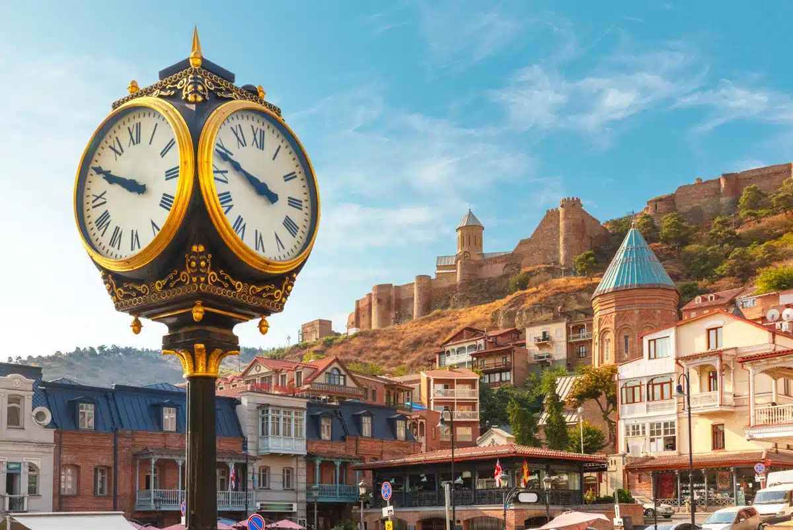
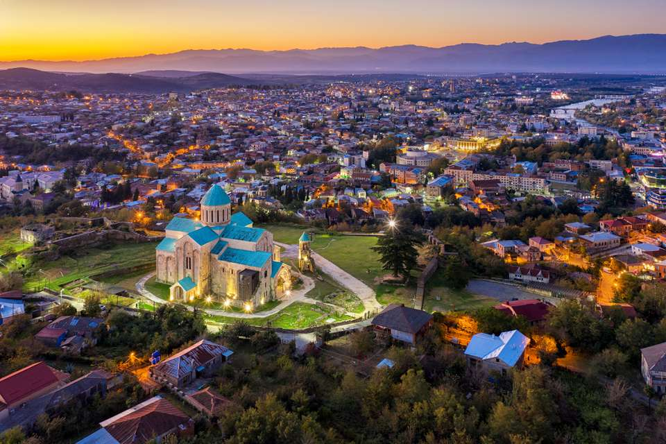
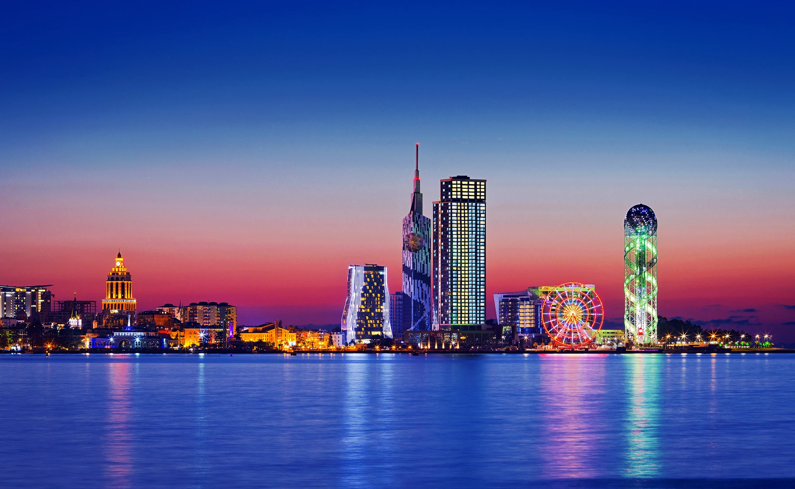
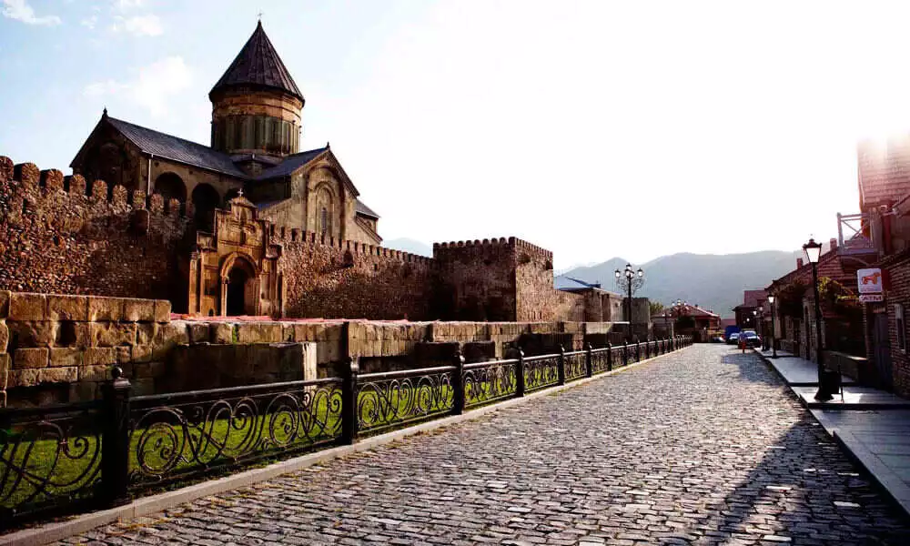
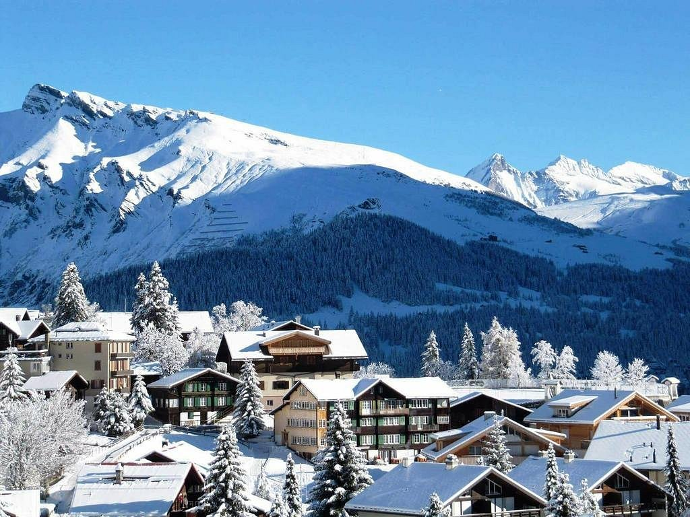
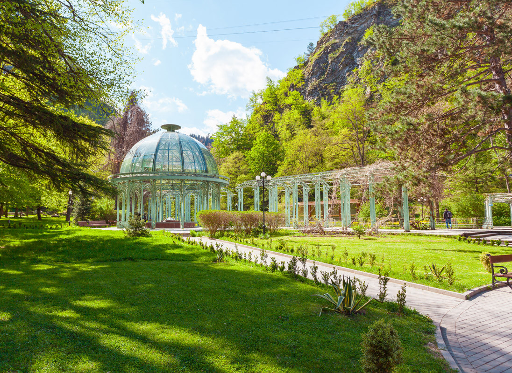
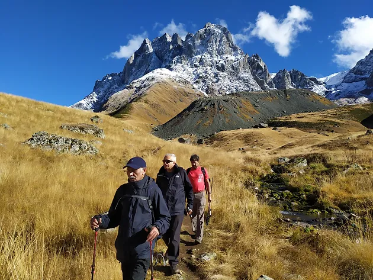
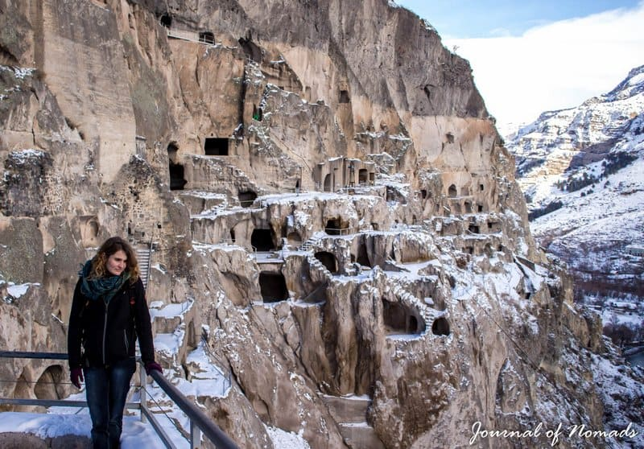
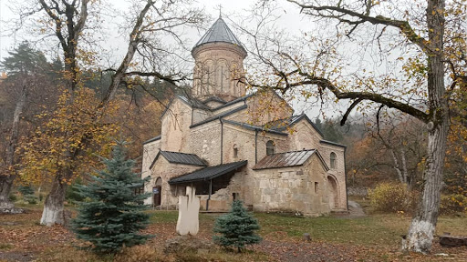

Tours
Tbilisi
Old Tbilisi is the heart of the city — a blend of Persian-style courtyards, colorful wooden balconies, winding lanes, ancient churches, and sulfur baths. Every corner holds history, every stone tells a story. It’s a place where tradition meets charm, and time seems to slow down.
Kutaisi
One of Georgia’s oldest cities, Kutaisi blends ancient history with natural beauty. Home to the UNESCO-listed Bagrati Cathedral and Gelati Monastery, it sits beside the Rioni River, surrounded by green hills. Kutaisi offers quiet charm, local flavors, and a gateway to caves, canyons, and mountain adventures.
Batumi
Batumi is Georgia’s coastal jewel — a lively mix of seaside charm and contemporary style. With its Black Sea beaches, futuristic skyscrapers, botanical gardens, and colorful street art, Batumi is both a relaxing getaway and a cultural hub.
Mtskheta
Mtskheta, one of Georgia’s oldest towns, is a spiritual and historical treasure. Once the ancient capital, it’s home to UNESCO World Heritage Sites like Svetitskhoveli Cathedral and Jvari Monastery. Nestled at the meeting point of two rivers, Mtskheta offers peace, sacred beauty, and a deep sense of Georgian identity.
Bakuriani
Bakuriani is Georgia’s family-friendly ski resort, surrounded by pine forests and peaceful mountains. In winter, it’s a snowy playground, and in warmer months, it’s a calm retreat with hiking and fresh mountain air.
Svaneti

Svaneti is a remote, high-altitude region guarded by the Caucasus mountains. Its stone towers, ancient churches, and untouched landscapes make it breathtaking. Mestia and Ushguli offer a glimpse into Georgia’s ancient highland culture.
Borjomi
Famous for its mineral water springs, Borjomi is a beautiful resort town surrounded by the Borjomi-Kharagauli National Park. The town’s green parks and fresh air have welcomed visitors for generations.
Kazbegi
Kazbegi, officially Stepantsminda, is a mountain town known for its dramatic landscapes. Towering above it is Mount Kazbek, with the iconic Gergeti Trinity Church perched high on a hill.
Vardzia
Carved into the cliffs of southern Georgia, Vardzia is a stunning 12th-century cave monastery complex featuring hundreds of rooms, tunnels, and churches inside the rock.
Kintsvisi
Hidden in the green hills of Shida Kartli, Kintsvisi Monastery is a peaceful 12th-century complex known for its beautiful frescoes and forest surroundings.